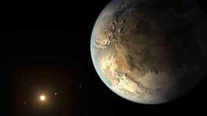

Una nueva Luna
Este asteroide fue descubierto el 15 de febrero pasado y es de tipo C con una importante composición de carbón, por lo tanto es muy oscuro..
“Una segunda Luna” que lleva tres años obitando sobre la Tierra fue descubierta el 15 de febrero de este año por el Centro de Planetas Menores, con sede en Washington.
A pesar que es un hallazgo sorprenderte, hay que tener en cuenta que este nuevo satélite natural no es tan impresionante como nuestra ya conocida Luna porque de acuerdo a las mediciones hechas por los astrofísicos se trata de un “miniluna” que tiene unos seis metros de diámetro y es posible que no esté mucho tiempo en la órbita terrestre.
El cuerpo estelar fue avistado por los astrónomos Theodore Pruyne y Kacper Wierzchos en el telescopio del Observatorio Mount Lemmon, cerca de la ciudad de Tucson, Arizona.
Las observaciones posteriores permitieron calcular la órbita de esta miniluna y, el 25 de febrero, el Centro de Planetas Menores hizo el anuncio de que el objeto celeste denominado 2020 CD₃ estaba orbitando la Tierra.
Además, el 2020 CD₃ es solo una pequeña muestra de los asteroides cuyas órbitas se cruzan con las de la Tierra. Tampoco representa un peligro si llegara a estrellarse contra la Tierra porque su tamaño es tan pequeño que se desintegraría en la atmósfera antes de impactar contra el suelo. No obstante, este fenómeno eligió otra manera de circular por estas regiones: en su curso hacia nuestro planeta fue tomado en una órbita mucho más lejana que la de nuestro instalado, y más permanente, satélite natural, la Luna.
Este asteroide podría ser tipo C, con una importante composición de carbón, por lo tanto muy oscuro, explicó Wierzchos en Twitter. El científico que colabora con la NASA dijo que la información que compartían era “importante” porque “es solo el segundo asteroide conocido en orbitar la Tierra (después del 2006 RH120, que también fue descubierto por Catalina Sky Survey)”.
Su ruta sugiere que entró a la órbita terrestre hace tres años, dijo Wierzchos. El centro de planetas menores del Observatorio Astrofisico Smithsonian, que acumula información sobre los objetos menores del sistema solar, dijo que: “Ningún vínculo con un objeto artificial ha sido encontrado”, implicando que se trataba por lo tanto seguramente de un asteroide capturado por la gravedad terrestre. La dinámica orbital “indica que este objeto está temporalmente atado a la Tierra”.